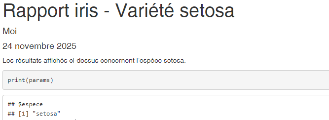

Chapitre 6 Paramétrer un rapport
Un des nombreux avantages de R Markdown est la possibilité de reproduire des analyses très facilement en actualisant une partie du travail ou en changeant un des entrants du document.
Utiliser des paramètres permet d’aller encore plus loin pour créer un document qui peut être réutilisé pour plusieurs scénarios.
On peut ainsi créer des documents pour des territoires ou des années différents, faire tourner une
analyse en changeant une des hypothèses ou changer le comportement de knitr selon les cas rencontrés.
6.1 Ajouter une entrée params dans l’entête yaml
Les paramètres sont spécifiés dans l’en-tête avec l’option params dans laquelle plusieurs paramètres, et leur valeur par défaut, sont listés, un par ligne.
Les paramètres peuvent être de type character, numeric, integer et logical mais aussi des expressions R tant qu’elles sont précédées de !r.
L’en-tête, et donc le code pouvant y être présent, est exécuté avant le reste du code donc il est nécessaire d’expliciter les packages utilisés.
Par exemple:
---
title: "mon_premier_document"
author: "Moi"
date: "31/10/2025"
output: html_document
params:
annee: 2024
region: Bretagne
date: !r lubricate::today()
---Une fois définis dans l’en-tête, ces paramètres sont accessibles depuis le fichier .Rmd (texte ou code) mais aussi depuis la console.
Ils sont stockés dans une liste nommée params.
6.2 Exemple d’utilisation des paramètres
Le code suivant montre quelques exemples d’utilisation des paramètres, dans les options de chunks, ou dans la production des visualisations :
---
title: "mon_premier_document"
author: "Moi"
date: "31/10/2022"
output: html_document
params:
espece: setosa
printcode: TRUE
---
```{r, setup, include=FALSE}
knitr::opts_chunk$set(
message = FALSE,
warning = FALSE,
echo = params$printcode
)
```
Les résultats affichés ci-dessus concernent l'espèce `r params$espece`.
```{r}
print(params)
summary(iris)
extrait <- iris %>%
filter(Species==params$espece)
```Il existe 3 façons de générer un document avec des paramètres :
utiliser le bouton knit, ce qui prend les valeur par défaut des paramètres ;
utiliser l’interface RStudio en sélectionnant l’option Knit with Parameters du bouton knit. Cela ouvre une nouvelle fenêtre demandant de choisir les valeurs des paramètres indiqués dans l’en-tête ;
utiliser la fonction
rmarkdown::render(). Sans autre précision cette fonction utilisera les paramètres par défaut définis dans l’en-tête. On peut aussi définir de nouvelles valeurs en utilisant l’optionparams =. Cela donne par exemple :
```{r, echo=FALSE}
rmarkdown::render("mon_premier_document.Rmd",
params = list(espece = "versicolor", printcode = FALSE))
```Cette dernière façon de faire, via la fonction rmarkdown::render() permet d’automatiser encore plus les choses en générant autant de documents que de valeurs différentes d’un paramètre.
En effet, dans un script .R, il est possible de créer une fonction ayant en entrée les paramètres que l’on veut
modifier plusieurs fois mais aussi le nom du document généré.
6.4 Paramétrer le titre du rapport
On peut utiliser du code R pour définir notre titre. La seule contrainte est de déplacer notre balise de titre après la définition des éléments dont il dépend.
---
author: "Moi"
date: "`r format(Sys.Date(), '%d %B %Y')`"
output: html_document
params:
espece: setosa
printcode: TRUE
title: "Rapport iris - Variété `r params$espece`"
---
On peut insérer le titre dans une balise yml ailleurs que dans l’entête placée en début de document si besoin de construire le titre avec des calculs R.
6.3 Comment compiler un rapport pour une liste de valeurs ?
En reprenant l’exemple précédent, on peut produire la sortie d’un rapport pour toutes les espèces :